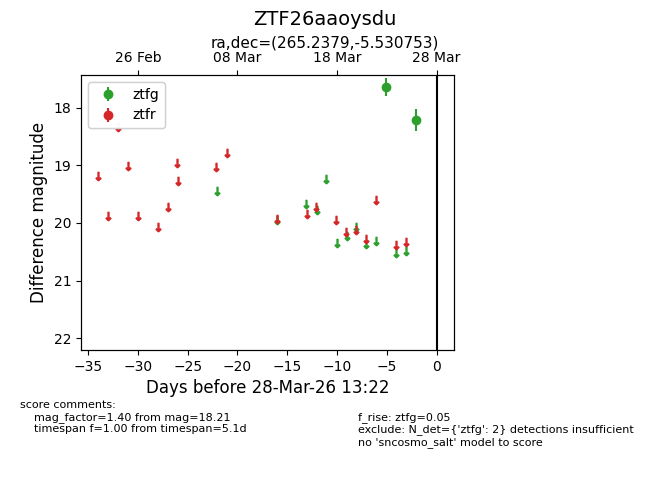
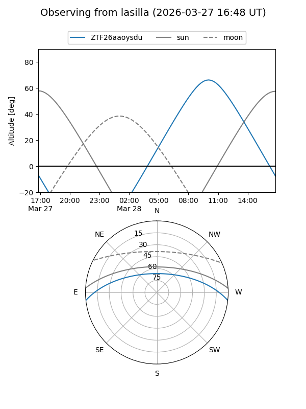
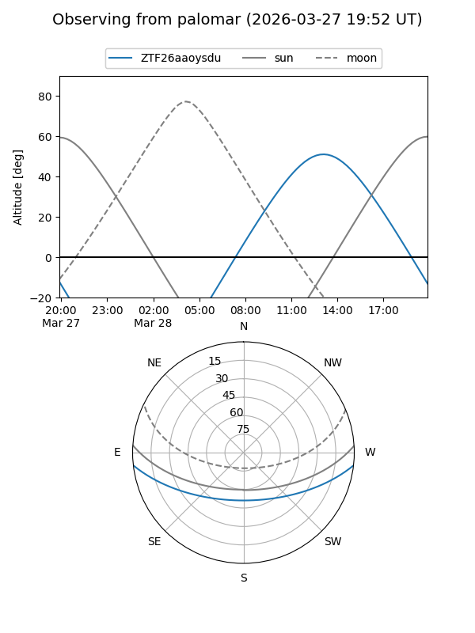

ZTF26aaoysdu
Target ZTF26aaoysdu at 2026-03-28 13:25
Aliases and brokers:
FINK: link
Lasair: link
ALeRCE: link
alt names
ZTF26aaoysdu (ztf,fink_ztf)
Coordinates:
equatorial (ra, dec) = 265.2379,-5.53075
equatorial (HMS+DMS) = 17:40:57.09,-05:31:50.71
galactic (l, b) = (19.6934,+12.95720)
Flags:
Photometry:
last ztfg=18.21
2 ztfg detections
Lightcurve

Visibility


Additional plots